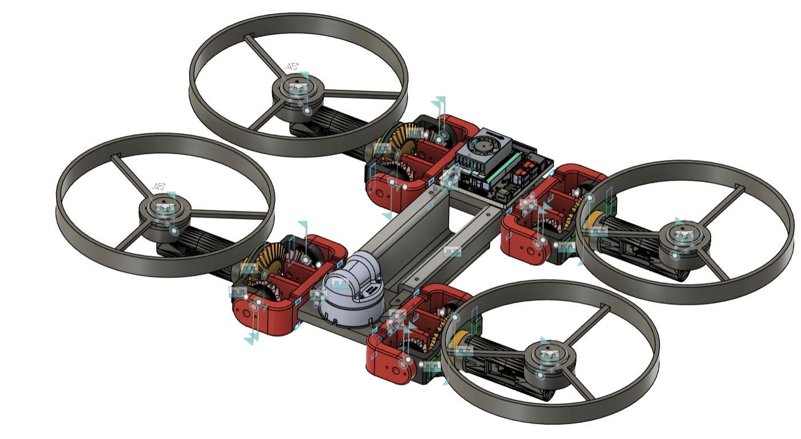
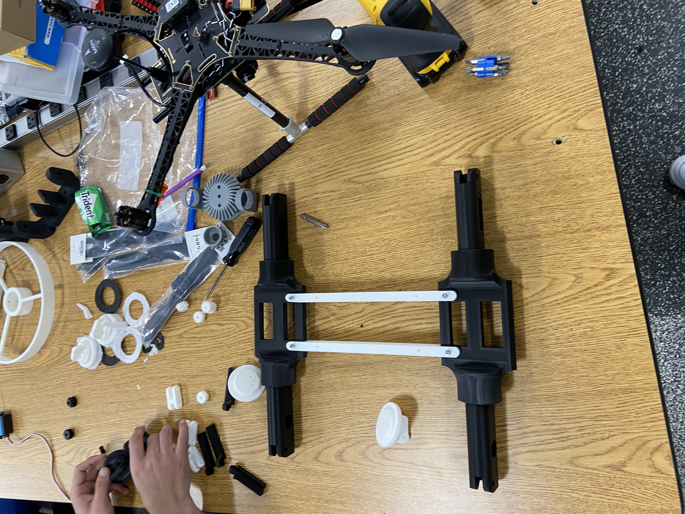
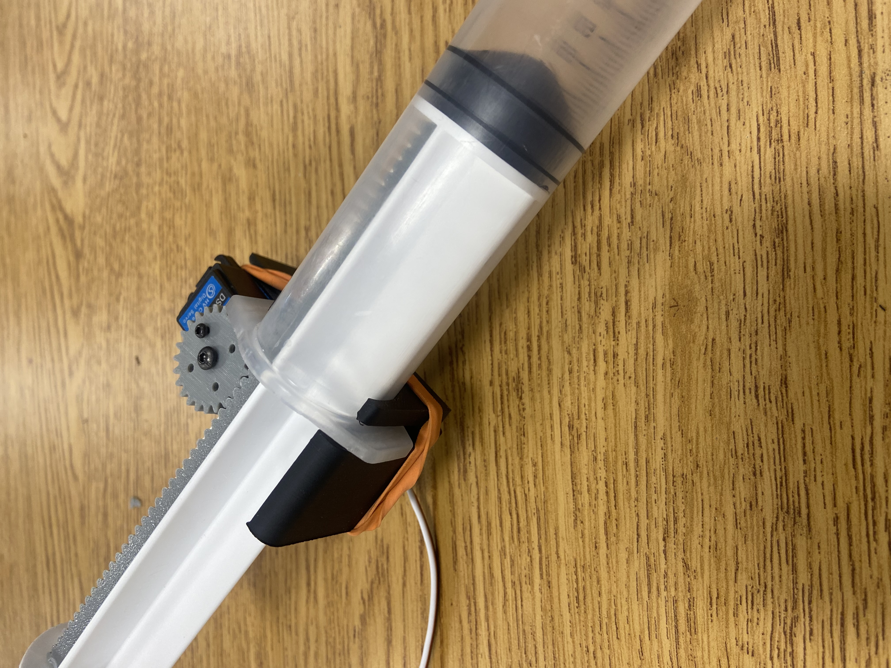

VT CRO CROLabs Research Project: Bimodal Robot
Mission
Work in progress! Research and design an autonomous bimodal modes of land and air travel without assistance. The robot will be capable of flying 400 ft above ground level (legal limit set by the FAA) as well as overland driving. The goal is to perform reconaissance and mapping, and potentially deliver a payload such as medical supplies to support search and rescue applications.
Design Overview
The robot is still in development; research is still being conducted. The current plan is to utilize a quadcopter-like design, where propellers will transition to wheels for land-based driving. Design goals include minimizing size and weight as well as over-actuation while maintaining fluid transitions. The robot's autonomy will be powered by a Unitree 4D Lidar L2 and an NVIDIA Jetson Nano using ROS and interfacing with a Pixhawk 6C for flight and a Teensy 4.0 microcontroller for land drive.
My Current Work: Modular Chassis and Developing Flight Mode
The robot is currently a quadcopter, but with the system being developed, will be able to easily incorporate additional rotors. The design aims to allow for the robot to be assembled from parts in minutes, coming together quickly with nuts and bolts and allowing for customization.
Electronics for our robot have been carefully selected. The Pixhawk 6C flight controller will interface with the Jetson, as well as a GPS sensor and applicable radios for telemetry, ground controller communication, and teleop. To transition between modes, the rotors will rotate as necessary and the appropriate control system will take over (e.g. Jetson will use either Pixhawk or Teensy.)


My Old Work: Vertical Buoyancy System
Formerly, this project was to produce a trimodal robot, with an additional marine mode. I was working on the underwater team, and produced the following system.
Using a 500 mL syringe, 45 kg high-torque servo, and PLA to design, 3D print, and assemble a syringe-pump system. A the servo uses a rack and pinion mechanism to alter the depth of the syringe plunger. To test the system, an ESP32 will control the servo's position, and therefore varying the system's density by taking in ballast water to alter system buoyancy. The necessary components will be waterproofed. An additional water-proofed ESP32 controller using pushbuttons will communicate with the system's controller, creating a tether-free, waterproof connection.

Outcome
Planning to present research at the MIT Undergraduate Research and Technology Conference (URTC) and National Conference on Undergraduate Research (NCUR).